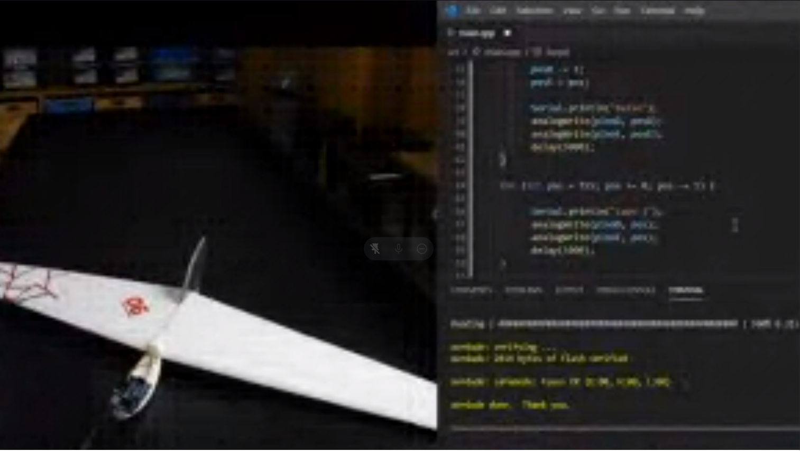
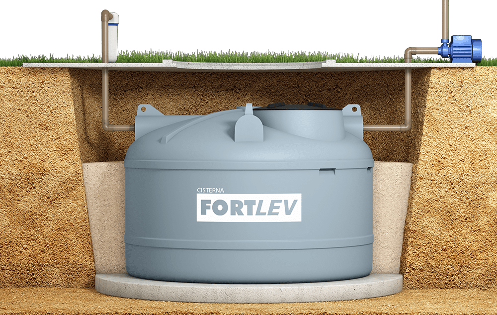
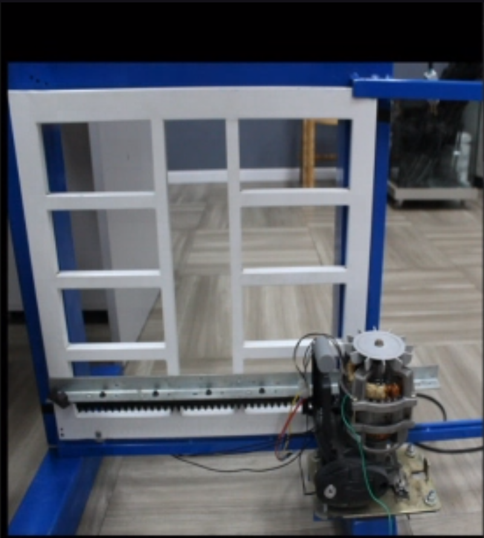
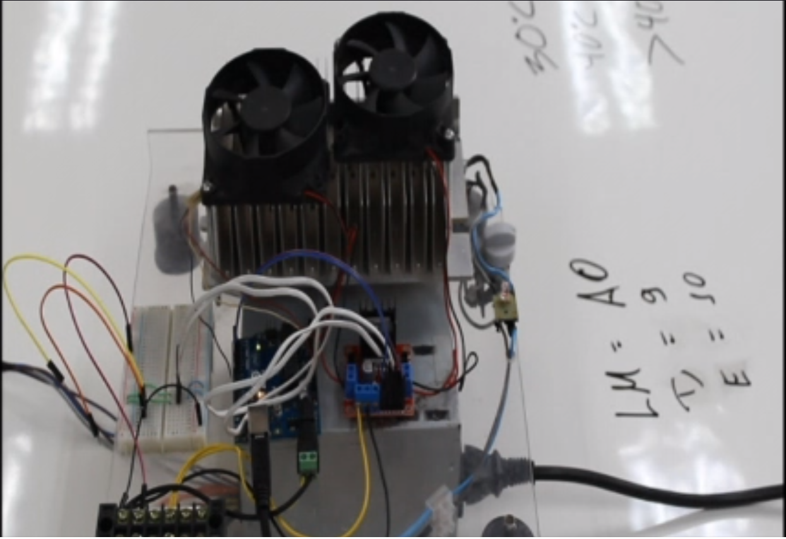
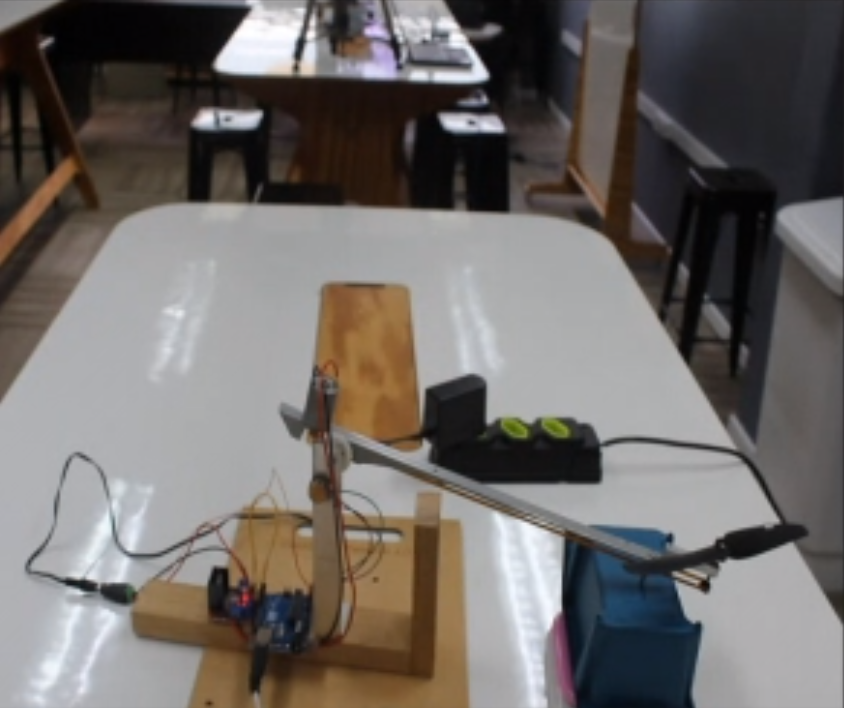

A atividade tinha como objetivos movimentar as asas do planador para 3 etapas do voo: Decolagem(asas para baixo);Curva(asas em sentidos opostos) e Pouso(asas para cima).

void loop(){
analogWrite(pinoD,0);
analogWrite(pinoE,0);
int posD=0;
int posE=200;
for(int pos=100; pos <=200; pos +- 1){
posD+=1;
posE-=1;
Serial.println("cima");
analogWrite(pinoD,posD);
analogWrite(pinoE,posE);
delay(2000);
for(int pos = 200; pos >=100; pos-=1){
posD-=1;
posD+=1;
Serial.println("baixo");
}
}
}
Nesse projeto existiam duas caixas e nós precisávamos levar água de uma à outra se a primeira estivesse cheia e a outra vazia além de não deixar a segunda transbordar.

#include <Arduino.h>
const int nivel_cisterna = 3; //PINO DIGITAL UTILIZADO PELO SENSOR
//DE NIVEL DA CISTERNA
const int nivel_sup_caixa = 8; //PINO DIGITAL UTILIZADO PELO SENSOR
//DE NIVEL SUPERIOR DA CAIXA DE AGUA
const int nivel_inf_caixa = 9; //PINO DIGITAL UTILIZADO PELO SENSOR
//DE NIVEL INFERIOR DA CAIXA DE AGUA
const int bomba = 12; //PINO DIGITAL UTILIZADO PELA BOMBA
unsigned long duration;
void setup(){
Serial.begin(9600);
pinMode(bomba,OUTPUT);
pinMode(nivel_cisterna, INPUT_PULLUP); //INICIALIZAÇÃO DA SERIAL
pinMode(nivel_inf_caixa, INPUT_PULLUP);
pinMode(nivel_sup_caixa,INPUT_PULLUP);
}
//nível da caixa d´agua 1 = vazia
void loop(){
if(digitalRead(nivel_cisterna) == 1 && digitalRead(nivel_sup_caixa==1)){
Serial.print
digitalWrite(bomba,HIGH);
}
else{
digitalWrite(bomba,LOW);
Serial.print("Não possui água");
}
}
Nesse projeto, a gente precisava fazer com que o portão abrisse ao apertar o botão e fechar quando apertado novamento

#include <Arduino.h>
// ZONA DE PROGRAMAÇÃO
int abre = 2; //Saida abrir portão pin 02
int fecha = 3; //Saida Fechar portão pin 03
int sabre = 12; //Sensor portão aberto pin 12
int statuabre = 0; // armazena o estado do sensor abre
int sfecha = 13; //Sensor portão fechado pin 13
int statufecha = 0; //armazena o estado do sensor fecha
int botao = 0; //Variável para armazenar informação no pin 08
void setup() {
pinMode(2, OUTPUT);
pinMode(3, OUTPUT);
pinMode(8,INPUT);
pinMode(12,INPUT_PULLUP);
pinMode(13,INPUT_PULLUP);
}
void loop(){
int btn = digitalRead(8);
if(btn == HIGH){
if(digitalRead(13) == LOW && digitalRead(12) == HIGH){
//Abre
digitalWrite(2,HIGH);
}
else if(digitalRead(13) == HIGH && digitalRead(12) == LOW){
//Fechar
digitalWrite(2,LOW);
delay(3000);
digitalWrite(3,HIGH);
}else{
//Neutro
digitalWrite(3,LOW);
digitalWrite(2,LOW);
}
}
}
Nesse projeto, a gente precisava fazer com que o sensor ative com uma determinada temperatura, sendo que o primeiro 25° e o segundo 35°

#include <Arduino.h>
// zona de programação A
// Cooler 1 = 9
// Cooler 2 = 10
// Acima de 30 - 1
// Acima de 40 - 1 e 2
float temperatura = 0;
void setup() {
Serial.begin(9600);
pinMode(9,OUTPUT);
pinMode(10,OUTPUT);
}
void loop() {
temperatura = (analogRead(A0) * 0.0048828125 * 100);
Serial.print("Temperatura = ");
Serial.print(temperatura);
Serial.println("C");
delay(2000);
if(temperatura >= 40){
digitalWrite(10 ,HIGH);
}
else if(temperatura >= 30){
digitalWrite(9 ,HIGH);
digitalWrite(10,LOW);
}
else{
digitalWrite(9,LOW);
}
}
Nesse projeto, nós precisávamos fazer com que a helice subisse um pouco e depois descesse suavemente.

#include <Arduino.h>
const int motor = 6;
const int poten = A1;
int val = 0;
void setup() {
Serial.begin(9600);
pinMode(motor, OUTPUT);
}
void loop() {
val = analogRead(A1);
Serial.println(val /5);
if(val/4 < 240){
analogWrite(6 ,val/5);
}
delay(1000);
for(int i = val/5; i > 231; i--){
Serial.println(i);
analogWrite(6 ,i);
delay(1000);
}
delay(3000);
}